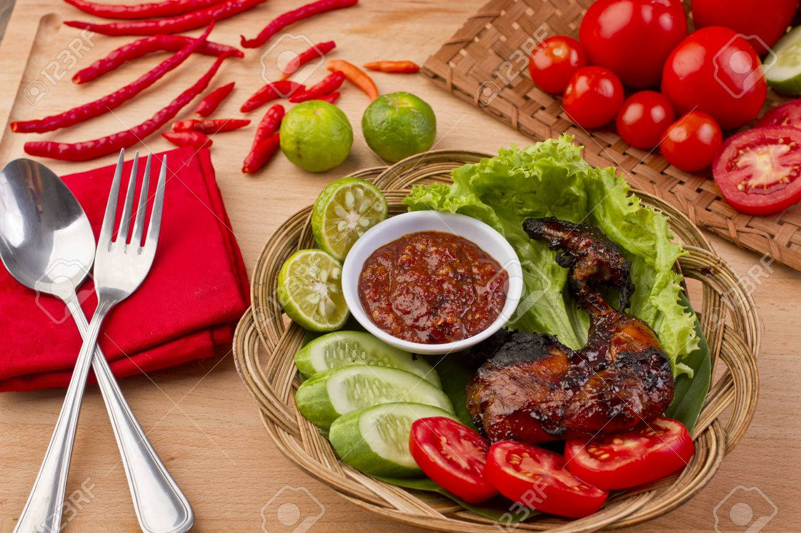

|  |
| Ayam Bakar UPNVJ |
| Deskripsi Resep |
| Ayam bakar adalah sebuah hidangan Asia Tenggara Maritim, terutama hidangan Indonesia atau Malaysia, dari ayam yang dipanggang di atas arang. Terdapat banyak resep ayam bakar, beberapa diantaranya yang populer adalah ayam bakar khas Padang, Ayam Percik dan Ayam Golek dari Malaysia, ayam bakar Taliwang dari pulau Lombok, bakakak hayam dari Sunda, dan ayam bakar bumbu rujak dari Jawa |
| Bahan-bahan |
|---|
| 1/2 ekor ayam bawah |
| 200ml santai cair |
| Bumbu halus (bawang merah&putih,cabai,terasi,kencur,dll) |
| Serai,daun jeruk,lada,gula,garam,kaldu,gula merah,minyak |
| Langkah-langkah |
|---|
| 1. Siapkan bahan-bahanh |
| 2. Panaskan minyak,bumbu,santan setelah itu ayamr |
| 3. Tunggu bumbu sampai meresap, lalu bakar |
| 4. Ayam siap untuk dihidangkan |